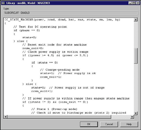
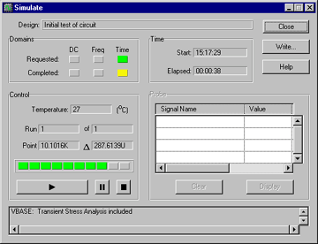

VeriBest makes analog design more efficient with systems thinking and a fully integrated and totally open environment. Zoom (56KB)

Rather than individual point tools, the VeriBest Analog design solution is a complete systems suite of integrated tools. With it, you are fully prepared to complete your analog designs with a minimum number of design iterations. Ease-of-use combined with powerful simulator control, industry standard inputs, Waveform Display and several modeling options work to facilitate your analog design process, from beginning to end.
VERIBEST DESIGN CAPTURE component frames allow for easy circuit creation. Parameter variables can be assigned to hierarchical components for later simulation evaluation or single-point design control. By maintaining a tight coupling between the simulator and the schematic, VERIBEST DESIGN CAPTURE makes it easy to specify simulation sources, specify components to monitor and specify devices to modify. You simply point to the location on the schematic. Just as easily as graphical schematic design entry, standard SPICE netlists can be entered directly into the simulator.
VERIBEST provides a modeling solution that allows engineers to leverage all modeling options. This solution puts over 30,000 models at the availability of your analog designers! The first component of the solution is the 6100+ models delivered in the libraries with VERIBEST ANALOG. Secondly, VERIBEST has partnered with Symmetry Design Systems to make their 16,000+ models available to VERIBEST customers at a significant discount. With the ability to import standard SPICE models and/or translate PSpice models directly, users have an additional model source through vendor supplied models over the worldwide web at no cost -- over 9000! Lastly, new models can be created from the easy-to-use templates that are included.
VERIBEST ANALOG supports the latest FET technology model equations including the Berkeley BSIM3V3 and the European EKV. With VERIBEST ANALOG’s Switch-Mode Power Supply (SMPS) models, your power designs will also simulate faster than with other alternative solutions. VERIBEST ANALOG ensures added confidence by staying current with the latest advances in models.
The VeriBest AHDL, DIABLO, is provided to help you create your own unique devices or simulate optical, mechanical, or thermal devices in tandem with your electrical system. With VERIBEST ANALOG if you can describe it with equations, you can simulate it.

Models are easily customized to get exactly what it is you need. Zoom (111K)
The advanced VERIBEST ANALOG Simulation Engine (VBASE) builds on proven, VeriBest simulation experience. While VBASE utilizes proprietary VeriBest technology, it maintains full SPICE compliancy. Designed to free users from having to manipulate complicated simulation parameters to overcome convergence problems, VBASE is fast, accurate, and more convergent than SPICE-based, or SPICE-derived, simulators. Easy-to-use menus make all simulation parameters and functions fully and quickly accessible.
VBASE enables you to perform Time Domain, Frequency Domain, DC Operating Point and Sweep Analyses. You also have the option of exploring Noise and Distortion Analyses.
Simulation results are readily viewed through several different display styles and options. You can also customize your results through on-line label addition and editing features. Output simulation results and reports are also functional with external tools through comma-separated-value data extraction.

Count on better simulation using VeriBest’s proven simulator engine.
Zoom (11KB)
VERIBEST ANALOG makes "what if?" engineering questions easier to explore and answer using the property override feature. With it you can change component values on the fly without having to save and recompile the schematic. You can hone in on optimum component or model parameter values with parameter sweeping. You can also execute stress analyses to see if the design operates in a region that stresses any of the components beyond their power rating.
Time Domain and Frequency Domain sensitivity analyses provide data on which components and parameters affect your critical circuit nodes more than others.
Through statistical Monte Carlo analysis, VERIBEST ANALOG enables you to explore manufacturing simulations of your completed design, verifying your component tolerances. With any of the seven delivered statistical distributions, or distributions you create, you can design corners using worst-case-analysis, displaying any statistical parameters that create a situation of interest.
Using the Loads feature of VBA you can simulate the parasitic loading affects of your input and output circuitry without having to represent them on the schematic. This capability maintains the integrity of the schematics for layout.
Fast-Fourier Transform (FFT) analysis of your time domain waveforms provides you with information on the key frequency components of your circuit’s output as well as identifying any unwanted harmonics.
Further analysis of your analyses results are provided via VERIBEST ANALOG’s Waveform Calculator. The Waveform Calculator is an RPN-based calculator that allows you to perform mathematical operations and functions on individual waveforms, between and with waveforms, and between waveforms and constants. The resultant derived waveform from the built-up expression can then be posted back to the display for viewing. A stack up to 99 deep as well as 99 memory locations are supported.
| Corporate Headquarters Boulder, Colorado 1.888.482.3322 email: sales@veribest.com http://www.veribest.com |
United Kingdom (44)1793.551.199
Germany (49) 89.96284.0 France (33) 1.41.76.35.00 Nordic (46) 8.92.54.00 Asia/Pacific (852) 2.893.3621 Japan (81) 3.5979.6331 |
|---|
 VERIBEST ANALOG makes it easy to use statistical analysis and confidently verify
advanced design functions.
Zoom (29KB)
VERIBEST ANALOG makes it easy to use statistical analysis and confidently verify
advanced design functions.
Zoom (29KB){kind=link}
{kind=link}
{kind=link}